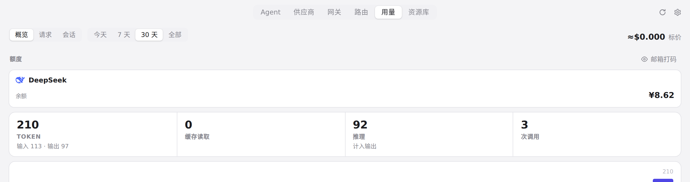
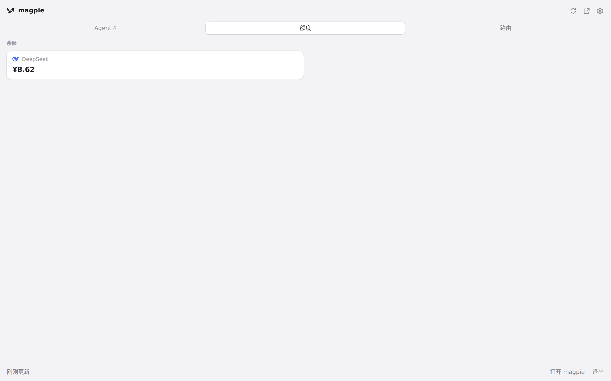

<!doctype html><html lang="zh"><meta charset="utf-8"><meta name="viewport" content="width=device-width,initial-scale=1">
<title>#287 界面预览 · 77c7b83</title>
<style>:root{color-scheme:light dark;--bg:#f6f6f7;--fg:#1d1d1f;--muted:#6e6e73;--card:#fff;--line:#e5e5ea}
@media (prefers-color-scheme:dark){:root{--bg:#111113;--fg:#f2f2f4;--muted:#9a9aa0;--card:#1c1c1f;--line:#2c2c30}}
body{margin:0;background:var(--bg);color:var(--fg);font:15px/1.6 -apple-system,"Segoe UI","PingFang SC","Noto Sans CJK SC",sans-serif}
main{max-width:1100px;margin:0 auto;padding:28px 16px 60px}h1{font-size:20px;margin:0 0 4px}.m{color:var(--muted);font-size:13px;margin:0 0 20px}
video,img{display:block;width:100%;border-radius:10px;border:1px solid var(--line);background:var(--card)}figure{margin:0 0 28px}figcaption{color:var(--muted);font-size:13px;margin-top:8px}
a{color:inherit}</style>
<main><h1>#287 界面预览</h1><p class="m">commit 77c7b83 · <a href="https://github.com/yetone/magpie/pull/287">回到 PR</a> · 用量百分比现在在非整数时显示一位小数；菜单栏提示文本也同步显示一位小数，但 UI 没有新增设置项。</p>
<figure><video src="preview.mp4" controls autoplay muted playsinline poster="poster.png"></video><figcaption>红线是鼠标走过的轨迹，红色圆环是一次点击；底部文字是这一步在做什么。空格暂停，← → 逐段查看。</figcaption></figure>
<figure><figcaption>用量页配额区域 · 用量页当前只有余额卡；百分比额度窗口会出现在这里</figcaption></figure>
<figure><figcaption>快速面板额度标签 · 快速面板额度标签当前也只显示余额，没有百分比窗口</figcaption></figure>
</main></html>